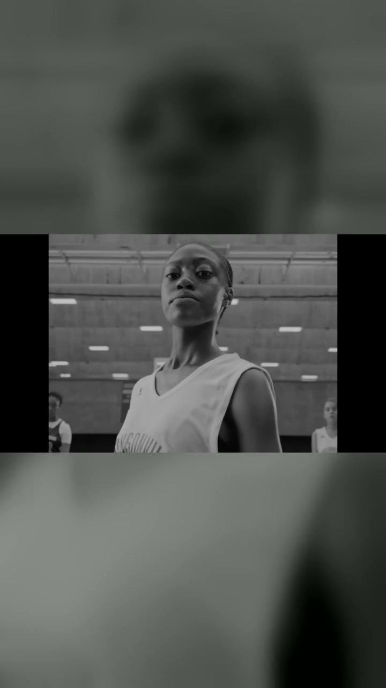

Uma curtida.
O vídeo em destaque.
Proposta visual para a publicação aberta do Business. O coração fica abaixo da mídia, sem disputar espaço com o conteúdo.
- Coração menor em cinza suave; preenchimento roxo quando curtido.
- Conjunto alinhado à direita, com contagem discreta ao lado. Um novo toque desfaz.
- Se o envio falhar, o estado anterior volta e a pessoa pode tentar novamente.
Protótipo isolado com dados simulados e imagem estática de uma campanha já preparada para o beta. Nenhuma curtida é enviada. Posição e comportamento são propostas; o conforto de toque será validado no iPhone.
You Got This

0 curtidas
Não foi possível salvar sua curtida.
Você pode assistir a esta publicação. Para gravar uma reação, abra uma campanha recebida na aba Gasps.